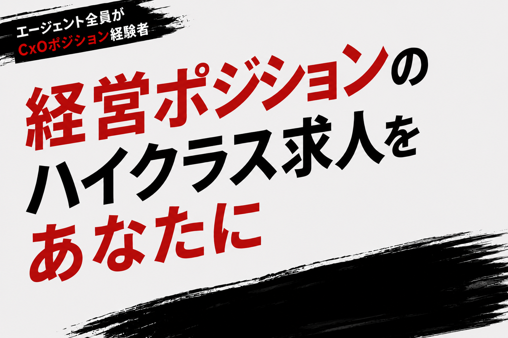
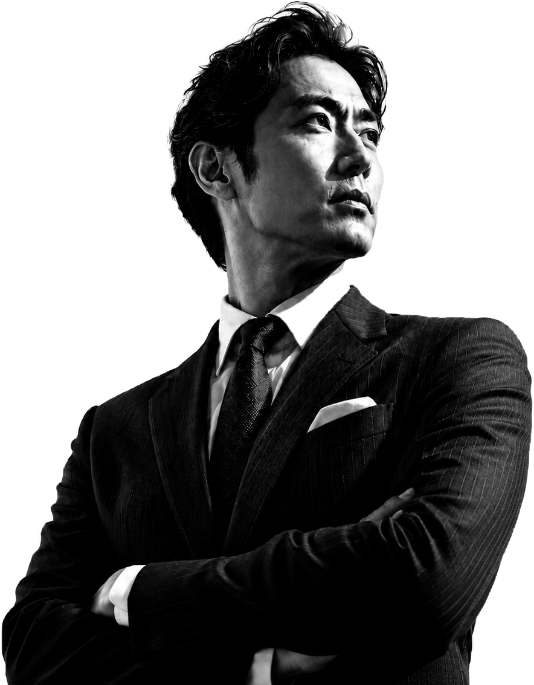

「行くべき会社」を、
経営目線で見極める
スタートアップのフェーズ感、経営チームの質、事業の実態。一般のエージェントには見えないものを、自分たちが経営者だからこそ読める。候補企業について本音でお話しします。


私たち自身が経営を経験してきたからこそ、あなたの市場価値を正しく見立て、本当にマッチする求人・企業をご紹介できます。今すぐでなくても、CxO・経営層を目指すキャリアの実現まで、一緒に伴走します。
スタートアップのフェーズ感、経営チームの質、事業の実態。一般のエージェントには見えないものを、自分たちが経営者だからこそ読める。候補企業について本音でお話しします。
一般媒体に出ない求人の多くは、経営者間の紹介・口コミで動く。私たち自身がそのネットワークの中にいるから、表に出ないポジションをご紹介できます。
今すぐCxOになれなくても、そこへ向かうキャリアの組み立て方がある。実際に経営してきたからこそ、リアルな道筋を一緒に描けます。
すでにCxO・経営幹部として活躍する方への求人だけでなく、将来のCxO候補を求める求人まで。経営層に直結するポジションを中心に取り扱います。年収・ポジションの質・契約形態の柔軟さにこだわり、正社員はもちろん、副業・業務委託での経営参画もご相談ください。
代表・CFO・CTOなど、実際に経営の現場に立ってきたメンバーが、あなたのキャリアを直接担当します。
カーソルを重ねて横にスクロール
※ 担当者の写真・氏名は公開時に実際のものに差し替えます。
私たちが扱う求人の多くは、経営者・投資家・社外取締役のネットワークを通じて集まります。一般の転職媒体には載らない、スタートアップ・成長企業の経営ポジション。このインナーサークルにアクセスできるのは、自分たちも経営者だからです。
経営層・幹部候補の非公開ポジション
年収レンジ（最高 3,000万円規模）
カーソルを重ねて横にスクロール
※ 掲載はイメージです。実際の非公開求人はご登録後にご案内します。
技術 / プロダクト
CTO
DXコンサルティングファーム ／ 非公開
2,000万〜3,000万想定年収
財務
CFO 候補
製造業（売上300億規模） ／ 非公開
1,800万〜2,400万想定年収
事業統括
事業本部長
消費財メーカー（上場） ／ 非公開
1,500万〜2,200万想定年収
オペレーション
COO
ITスタートアップ（Series B） ／ 東京
1,200万〜1,800万想定年収＋ストックオプション
マーケティング
CMO
D2Cブランド（急成長） ／ 非公開
1,200万〜1,800万想定年収
経営企画
経営企画室長
上場グループ持株会社 ／ 非公開
1,400万〜2,000万想定年収
面談はすべてオンライン対応。情報収集だけの段階から、お気軽にご利用ください。
フォームから2分で完了。費用はかかりません。
担当がオンラインで経歴・希望・方向性をヒアリング。正直に話してください。
ネットワーク経由の非公開ポジションを中心に、厳選してご提案します。
面接対策から年収・役職交渉、入社後フォローまで伴走します。
求職者の方への費用は一切かかりません。登録・相談・求人紹介・選考サポートすべて無料です。
もちろんです。「情報収集したい」「市場価値を知りたい」という段階からの相談を歓迎しています。経営キャリアは早めに動くほど選択肢が広がります。
ありません。ご本人の同意なく企業へ情報を開示することは一切ありません。秘密厳守で対応します。
はい。事業会社での深い実績や変革のポテンシャルがあれば、CFO・COO・CTO候補として評価される求人があります。「いつか経営に」という方も歓迎です。
ご利用いただけます。面談はオンライン対応。リモート前提の求人や地方企業の経営ポジションも取り扱っています。
登録・相談は完全無料。
「まだ転職するか分からない」という段階でも構いません。